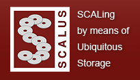

")
")
SCALUS
La investigación sobre sistemas de almacenamiento está adquiriendo cada vez más importancia debido principalmente a la enorme demanda de capacidad de almacenamiento y rendimiento de E/S de los actuales sistemas de computación. En los últimos años, varias tendencias han cambiado el diseño de los sistemas de almacenamiento, desde nuevos medios de almacenamiento sobre redes de área de almacenamiento, hasta sistemas de almacenamiento grid y cloud.
Adicionalmente, para decrementar el coste de los sistemas de almacenamiento, éstos se construyen cada vez más a partir del ensamblaje de commodity components. Por tanto, estamos en medio de una evolución hacia una nueva arquitectura de almacenamiento desarrollada a partir de commodity components descentralizados con mayores capacidades de procesamiento y comunicación, lo que requiere la introducción de nuevos conceptos surgidos a partir de esta nueva arquitectura.
El consorcio de esta Marie Curie Initial Training Network (MCITN) "SCALing by means of Ubiquitous Storage (SCALUS)" tiene como principal objetivo mejorar e innovar la educación, la investigación y el desarrollo de los sistemas de almacenamiento en entornos de tipo cluster, grid y cloud.
Página web: http://www.scalus.eu
Rol del OEG en SCALUS
La UPM estará involucrada en la co-supervisión de 4 ESRs (Early Stage Researchers) en la consecución de los siguientes trabajos:
ESR 3: Gestión autónoma de réplicas (Autonomic Replica Management)
Caching y replicación son dos conceptos similares que han permanecido tradicionalmente separados en los grandes entornos distribuidos. El objetivo de este trabajo es el uso de caching de cliente (tanto en memoria como en disco) para mejorar la redundancia y el rendimiento. Adicionalmente, la replicación no sólo implica a ficheros de sólo lectura, sino también a ficheros de lectura-escritura. Los estudiantes asignados a este trabajo propondrán mecanismos de distribución y localización de datos que integran tanto caching como replicación de una manera automática e inteligente. Finalmente, es importante que el mecanismo propuesto escale hasta entornos WAN para que permita la cooperación entre recursos.
ESR 11: Gestión autónoma de Data Grid y almacenamiento cloud (Autonomic Management of Data Grids and Cloud Storage)
Los data grids y los sistemas de almacenamiento cloud se caracterizan por su complejidad y dinamismo. Por tanto, la gestión de recursos en este tipo de entornos es compleja y las decisiones tomadas en un momento pueden ser contraproducentes poco tiempo después. Conocer el estado futuro del entorno es esencial para implementar políticas adecuadas en cada situación. El estudiante asignado a este trabajo tendrá que desarrollar un sistema de predicción autónomo que permita la gestión mejorada de recursos de almacenamiento en estos entornos.
ESR 12: Sistema de ficheros en Grid de alto rendimiento, seguro y tolerante a fallos (High-performance, Secure and Fault Tolerant Grid File System)
La tolerancia a fallos es un tema que no ha sido adecuadamente abordado en los entornos de almacenamiento a gran escala, debido a la complejidad de los mismos. Conocer el comportamiento de estos entornos puede ayudar a prevenir ciertos fallos, lo que redunda en una mejora de la tolerancia a fallos de los mismos. El estudiante asignado a este tema desarrollará estrategias de tolerancia a fallos basándose en el modelado de entornos de almacenamiento a gran escala.
ESR 14: Hacia un sistema de ficheros en "la nube" escalable, tolerante a fallos y autoadaptativo (Towards a scalable, fault-tolerant, self-adaptive Cloud file system)
Las aplicaciones intensivas de datos ejecutando en infraestructuras cloud requieren ciertas características como la compartición entre máquinas virtuales que mantengan un gran rendimiento bajo una gran demanda de accesos concurrentes. Estas características no las proporcionan soluciones actuales en entornos cloud, como S3. El objetivo de este trabajo es explorar las posibilidades ofrecidas por BlobSeer, una plataforma de compartición de datos genérica y que da soporte a grandes cantidades de datos, como sustrato de almacenamiento para un sistema de ficheros de alto nivel, escalable, tolerante a fallos, adaptativo y optimizado para procesamiento de datos masivo.
Participantes
Las personas involucradas en el desarrollo del proyecto SCALUS son:
Publicaciones y otros resultados
El proyecto acaba de empezar por lo que no hay publicacion o resultados dignos de mencionar.
Oportunidades de trabajo.
La fase de contrataciñon está cerrada.

Created under Creative Commons License - 2015 OEG.